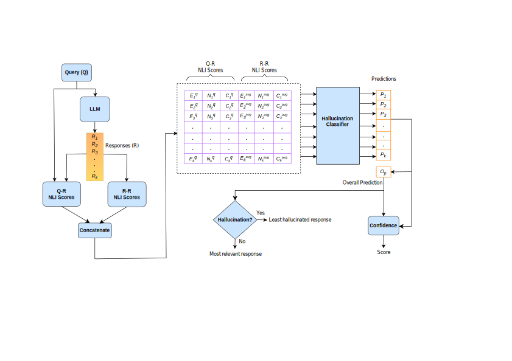

Hallu Counter: Reference-free LLM Hallucination Detection in the Wild!      Â
     ÂAbstract
       Â          Response consistency-based, reference-free hallucination detection (RFHD) methods do not depend on internal model states, such as generation probabilities or gradients, which Grey-box models typically rely on but are inaccessible in closed-source LLMs. However, their inability to capture query-response alignment patterns often results in lower detection accuracy. Additionally, the lack of large-scale benchmark datasets spanning diverse domains remains a challenge, as most existing datasets are limited in size and scope. To this end, we propose HalluCounter, a novel reference-free hallucination detection method that utilizes both response-response and query-response consistency and alignment patterns. This enables the training of a classifier that detects hallucinations and provides a confidence score and an optimal response for user queries. Furthermore, we introduce HalluCounterEval, a benchmark dataset comprising both synthetically generated and human-curated samples across multiple domains. Our method outperforms state-of-the-art approaches by a significant margin, achieving over 90% average confidence in hallucination detection across datasets.        Â
     ÂMethodology & Findings
     ÂHalluCounter Pipeline
          Â             The HalluCounter pipeline operates in three main stages: extracting NLI features, classifying responses, and generating the final prediction with a confidence score and optimal response.           Â
                                 Â            Fig 1. HalluCounter: A reference-free Hallucination Detection Pipeline.          Â
         ÂKey Pipeline Components:
           Â-
             Â
- **Extracting NLI Features:** We extract Natural Language Inference (NLI) features for both Query-Response (Q-R) and Response-Response (R-R) pairs using a fine-tuned DeBERTa-v3-large cross-encoder model. Â Â Â Â Â Â Â Â Â Â Â Â Â Â
- **Hallucination Classifier:** A classifier, built with either a statistical ensemble or a BERT-based model, takes the NLI features to predict if a response is a hallucination (1) or not (0). Â Â Â Â Â Â Â Â Â Â Â Â Â Â
- **Optimal Response & Confidence:** The pipeline aggregates individual predictions to determine an overall prediction, provides a confidence score, and identifies the least hallucinated response as the optimal one. Â Â Â Â Â Â Â Â Â Â Â Â
Dataset and Evaluation
         ÂHalluCounterEval Dataset
             ÂWe introduce a large-scale, multi-domain benchmark dataset for the RFHD task, comprising both synthetic and human-annotated samples across various fields, including factual queries, mathematical reasoning, and general knowledge. The dataset creation involved rule-based filtration and rigorous human annotation with an Inter-Annotator Agreement of 0.83.
           ÂKey Findings
             Â-
               Â
- HalluCounter significantly outperforms state-of-the-art methods like SelfCheckGPT and InterrogateLLM. Â Â Â Â Â Â Â Â Â Â Â Â Â Â Â Â
- The pipeline achieves over 90% average confidence in hallucination detection across different datasets. Â Â Â Â Â Â Â Â Â Â Â Â Â Â Â Â
- Performance remains stable despite varying the number of sample responses. Â Â Â Â Â Â Â Â Â Â Â Â Â Â Â Â
- LLMs show a higher tendency to hallucinate on questions requiring mathematical reasoning and scientific factual knowledge. Â Â Â Â Â Â Â Â Â Â Â Â Â Â
Hallucination Rate Across Domains
                             Â            Fig 2. Hallucination rates across different sub-domains in various test sets.          Â
       ÂKey Contributions
         Â-
           Â
- Â Â Â Â Â Â Â Â Â Â Â Â Â Â 1. Â Â Â Â Â Â Â Â Â Â Â Â Â Â We introduce HalluCounter, a novel approach for the Reference-Free Hallucination Detection (RFHD) task. Â Â Â Â Â Â Â Â Â Â Â Â Â Â Â Â Â Â Â Â Â Â Â Â
- Â Â Â Â Â Â Â Â Â Â Â Â Â Â 2. Â Â Â Â Â Â Â Â Â Â Â Â Â Â We present a large-scale, multi-domain benchmark dataset, HalluCounterEval, for the RFHD task. Â Â Â Â Â Â Â Â Â Â Â Â Â Â Â Â Â Â Â Â Â Â Â Â
- Â Â Â Â Â Â Â Â Â Â Â Â Â Â 3. Â Â Â Â Â Â Â Â Â Â Â Â Â Â We conduct extensive experiments and ablation studies to evaluate various feature combinations, classifiers, and LLMs. Â Â Â Â Â Â Â Â Â Â Â Â Â Â Â Â Â Â Â Â Â Â
Citation
       ÂIf you find our work useful, please consider citing:
       Â@article{urlana2025hallu,
  title={Hallu Counter: Reference-free LLM Hallucination Detection in the Wild!},
  author={Urlana, Ashok and Kanumolu, Gopichand and Kumar, Charaka Vinayak and Garlapati, Bala Mallikarjunarao and Mishra, Rahul},
  journal={arXiv preprint arXiv:2503.04615},
  year={2025}
}